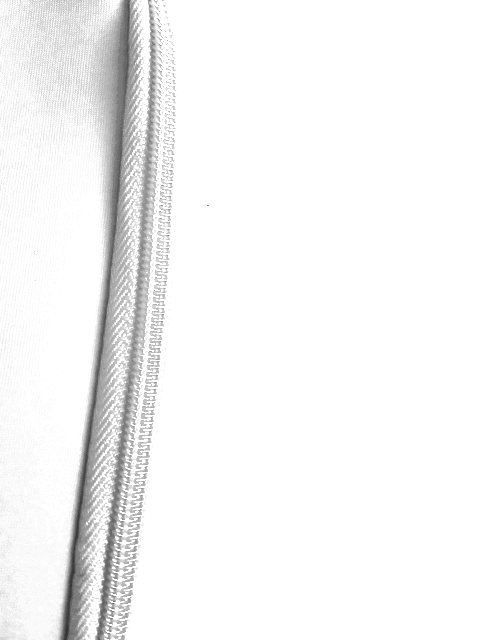

Der Grund liegt im Aufbau des menschlichen Auges. Auch hier werden Farb- und Lichtintensität getrennt verarbeitet. Die Sensoren der Augen bestehen aus Stäbchen, die größtenteils die Lichtintensität verarbeiten, und Zapfen, die detalliertere Informationen verarbeiten (Farben).
Detailbild Rot
Detailbild Grün
Detailbild Blau
Detailbild Y
Detailbild Cb
Detailbild Cr
Detailbild rekonstruiert
Hier noch der Code, in dem wir die Formeln aus der Vorlesung eingebaut haben.
Detailbild Histogramm
Unsere mittlere Helligkeit ist ca. 115, Der Kontrast ist 50,745.
In unserem Code sieht man, dass wir die Formel für die Lichtintensitätsänderung aus der Vorlesung angewendet haben. Die minimale Helligkeit haben wir bei einer Änderung von -140. Das Muster ist jetzt kaum noch erkennbar.
Detailbild Helligkeit -20
Detailbild Helligkeit -40
Detailbild Helligkeit -60
Detailbild Helligkeit -80
Detailbild Helligkeit -100
Detailbild Helligkeit -120
Detailbild minimale Helligkeit -140
Histogramm minimale Helligkeit -140
Die maximale Helligkeit liegt bei uns bei einer Änderung von +160. Auch hier erkennt man kaum noch die Form selbst. Das sieht man auch im Histogramm, wo hier der Großteil der Fläche im Helligkeitsmaximum liegt.
Detailbild Helligkeit 20
Detailbild Helligkeit 40
Detailbild Helligkeit 60
Detailbild Helligkeit 80
Detailbild Helligkeit 100
Detailbild Helligkeit 120
Detailbild Helligkeit 140
Detailbild maximale Helligkeit 160
Histogramm maximale Helligkeit 160
Nun haben wir die Kontraständerungsformel angewandt. Im kontrastärmsten Bild erkennt man die Details noch weniger als bei der Helligkeitsänderung. Im Histogramm sieht man eigentlich nur noch zwei Ausschläge, die beide sehr nah am Helligkeitsminimum liegen.
Kontrast 0.2
Histogramm 2.0
Kontrast 0.4
Kontrast 0.8
Kontrast 1.0
Bei Kontraständerung von 10 erkennt man nur noch schwarze Linien und eine weiße Fläche. Hier ist das kontrastreichste Bild.
Kontrast 1.5
Kontrast 2.5
Kontrast 5.0

Histogramm 5.0
Kontrast 10.0
Kontrast negativ